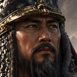
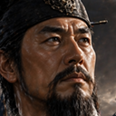
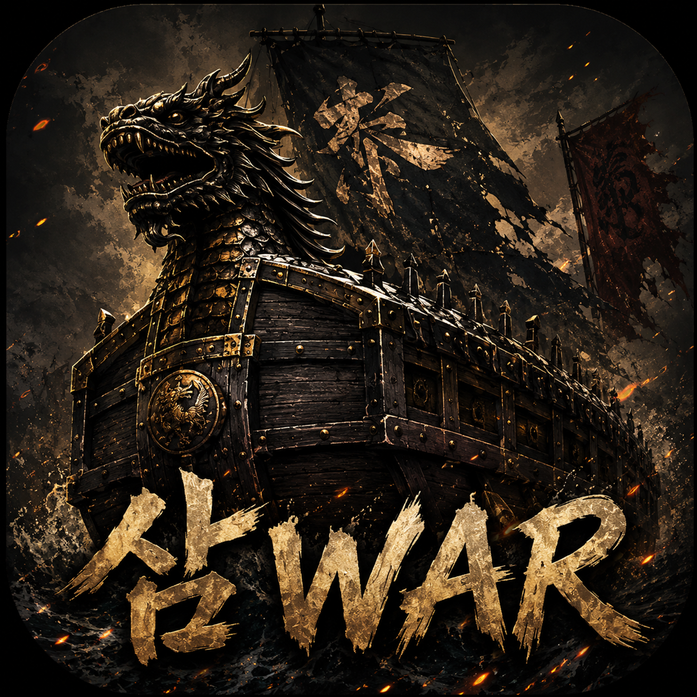
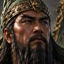

전투가 깊어졌다
이펙트, 템포, 그리고 새로운 영웅들
2026년 5월 3일 — 5월 6일전투의 리듬을 찾아서
v0.2-7o — 2026.05.03게임을 만들다 보면 어느 순간 이런 질문이 생긴다. "이 전투, 왜 이렇게 심심하지?" 유닛이 움직이고, 숫자가 깎이고, 전투가 끝난다. 기능은 다 있는데 뭔가 허전하다. 그 허전함의 정체는 바로 리듬이었다.
v0.2-7o에서는 전투의 템포감을 본격적으로 손봤다. 반격 딜레이, 적 행동 간격, 자동전투 속도 — 이 세 가지 숫자를 조금씩 조정했을 뿐인데, 전투가 훨씬 살아있는 느낌이 됐다. 코드 한 줄 바꾼 게 아니라 타이밍 세 개를 조율한 것인데, 게임의 분위기가 확 달라진다는 걸 다시 한번 실감했다.
전투를 재미있게 만드는 건 공식이 아니라 리듬이다.
컷인이 번쩍이다 — 그리고 처음엔 실패했다
v0.2-8 ~ v0.2-8e — 2026.05.03006 일지에서 이순신의 고유특기 컷인 이미지가 전투판에 등장하는 걸 구현했다고 했다. 근데 솔직히 말하면, 그때 완성된 건 아니었다. 이미지가 전투판 밖으로 삐져나오고, 크기는 화면을 다 뒤덮고, CSS 배경 효과는 엉뚱한 데까지 번졌다.
v0.2-8에서 처음 시도했을 때는 그냥 실패였다. 이미지가 브라우저 전체를 덮어버렸다. v0.2-8a에서 먼저 컷인이 갇혀야 할 영역, 즉 전투판 내부를 정확히 잡는 것부터 시작했다. 어디에 표시할지도 모르는데 크기부터 조정하는 건 순서가 틀린 거니까.
영역을 잡고 나서 v0.2-8b에서 이미지 크기를 절반으로 줄였고, v0.2-8c/d에서 CSS 사선 배경 효과까지 전투판 안으로 가뒀다. 마침내 이순신의 컷인이 전투판 안에서 제대로 번쩍이기 시작했다.
그리고 v0.2-8e — 이순신 혼자만 쓰던 컷인 시스템을 노부나가, 겐신, 정도전에게까지 확대했다. 이제 적 유닛도 행동할 때마다 컷인이 터진다. 유닛이 움직이고 → 컷인이 번쩍이고 → 효과가 발동하고 → 다음 유닛으로 넘어간다. 이 흐름 덕분에 전투 템포도 자연스럽게 정리됐다.


전장을 넓혀라 — 14×8 전장과 부대 정비
v0.2-9a ~ v0.2-9c — 2026.05.03컷인 시스템이 자리를 잡자, 이번엔 전장 자체를 손볼 차례였다. v0.2-9a에서 전장 크기를 14×8로 확장했다. 유닛들이 더 넓은 공간에서 움직이니까, 전략적인 배치가 훨씬 의미 있어졌다.
v0.2-9b에서는 부대 토큰의 비주얼을 다듬었다. 너무 쨍한 파랑/빨강 깃발을 수묵 채색풍으로 바꾸고, 테두리는 낮추고 바닥 그림자를 강화했다. 전략 게임 특유의 진중한 분위기를 살리고 싶었다.
v0.2-9c에서는 무장 선택 UI도 개선했다. 오른쪽 HUD의 버튼으로도 무장을 선택할 수 있게 했고, 고유특기 이름도 손봤다. 노부나가의 "화승총 사격"은 삼단격으로, 겐신의 "돌격"은 차륜전으로 — 역사적인 느낌을 더 살린 이름으로 바꿨다.
수동 전투와 적의 침공
v0.2-9d ~ v0.2-10 — 2026.05.055월 4일은 쉬었다. 코드에서 잠깐 떨어져 있으니까, 오히려 다음에 뭘 해야 할지 더 선명하게 보였다.
5일에 돌아와서 v0.2-9d를 작업했다. 전투에서 자동과 수동 중 선택하는 모드를 적용했다. 공격할 때도, 방어할 때도 플레이어가 직접 고를 수 있다. 그런데 수동 전투를 구현하다 보니 버그가 하나 나왔다. 상대가 혼란 상태에 걸렸을 때 아무것도 못 하고 그냥 멈춰버리는 것이었다.
이 버그, 사실 쉽지 않았다. 채코치가 계속 부분적으로 수정을 시도했는데 해결이 안 됐다. 그래서 클코치(Claude Opus 4.7)를 투입해서 전체 코드 흐름을 거시적으로 다시 분석했다. 부분만 보면 놓치는 게 있다. 전체 루트에서 보니까 원인이 보였고, 채코치와 함께 바로 해결할 수 있었다. 혼란 상태도 정상적으로 턴을 소비하도록 수정 완료.
v0.2-10에서는 월드맵에 턴 시스템을 붙였다. 아군 턴이 끝나면 적군 턴이 오고, 적이 확률적으로 침공해온다. 침공이 발생하면 다시 자동/수동 전투 선택 화면이 뜨고, 적이 이기면 아군 수도가 밀려난다. 월드맵이 단순한 배경에서 진짜 전략판이 되는 순간이었다.
전투 결과를 드라마틱하게 — 컷인과 BGM
v0.3-3a ~ v0.3-3b — 2026.05.05전투가 끝날 때 그냥 결과 텍스트만 뜨면 밋밋하다. v0.3-3a에서 전투 종료 시 승리/패배 결과 이미지를 컷인처럼 전투판 중앙에 2초간 표시하도록 만들었다. 영웅의 고유특기 컷인과 같은 방식이다.
나중에 BGM이 붙으면 이 2초 타이머를 음악 길이에 맞게 교체하면 된다. 구조를 미리 열어두는 것, 이게 나중에 얼마나 편한지는 직접 써봐야 안다. v0.3-3b에서는 바로 승리/패배 음악도 삽입했다. 전투 결과가 단순한 팝업이 아니라 하나의 연출이 됐다.
모바일에서도 EASTWAR를 — 아이콘과 쇼컷
v0.3-3c — 2026.05.06게임을 만드는 사람으로서, 내가 만든 걸 폰으로 바로 꺼내서 볼 수 있다는 건 생각보다 꽤 설레는 일이다. v0.3-3c에서 모바일 홈 화면 쇼컷을 지원하는 작업을 했다. 아직 모바일 최적화가 다 된 건 아니지만, 일단 폰 홈 화면에서 아이콘을 누르면 게임으로 바로 들어갈 수 있다.
아이콘은 채코치의 이미지 생성 기능으로 만들었다. 거북선과 용, 그리고 "EASTWAR" 로고가 박힌 이 이미지 — 폰 홈 화면에서 처음 봤을 때 꽤 그럴싸했다.

관우와 장비, 전장에 서다
v0.3-4a ~ v0.3-4d — 2026.05.06EASTWAR는 한국·중국·일본 영웅이 동아시아 전체를 무대로 싸우는 게임이다. 그런데 지금까지는 한국(이순신, 정도전)과 일본(노부나가, 겐신)만 있었다. 드디어 중국 세력이 등장할 차례였다.
v0.3-4a에서 관우와 장비의 데이터를 설계했다. 영웅 데이터는 data/heroes.js, 고유특기는 data/skills.js에서 관리한다. 무장 한 명을 추가한다는 건 그냥 이미지 하나 넣는 게 아니다. 이름, 세력, 능력치, 고유특기 로직까지 설계해야 한다.
관우의 고유특기는 언월참. 적 한 부대에 1.6배 피해를 주고, 자신은 1턴간 방어력이 25% 오른다. 공격과 방어를 동시에 챙기는, 관우다운 기술이다. 장비의 고유특기는 장판파열. 적 한 부대에 1.5배 피해를 주고, 주변 상하좌우 한 칸까지 40% 확률로 동요 상태를 건다. 전형적인 돌격형 장수다.

v0.3-4b에서 관우와 장비의 초상과 고유특기 이미지를 삽입했다. v0.3-4c에서는 도시별 배치도 완료했다. 이순신·정도전은 한양, 노부나가·겐신은 교토, 관우·장비는 낙양. 세 세력이 각자의 거점을 가지고 동아시아 지도 위에 섰다.
v0.3-4d에서는 육지로 연결된 평양과 낙양을 월드맵에서 이어줬다. 이제 한국 세력과 중국 세력이 직접 맞붙을 수 있는 경로가 생긴 것이다. 지도 한 줄 연결했을 뿐인데, 게임이 한층 더 넓어진 느낌이었다.
코드 몇 줄로 대륙이 이어졌다. 이게 게임 만드는 맛이지.